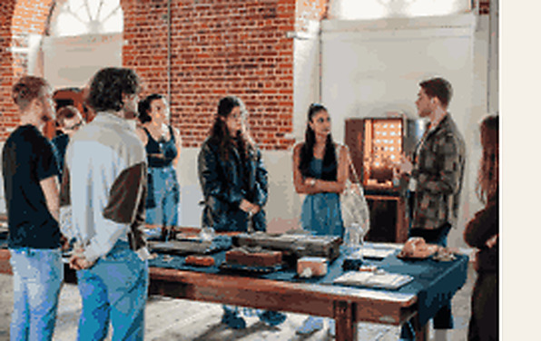

About Memory Library
Memory Library is a developing programme exploring memory, heritage, technology and human connection.
Designed through nearly a decade of practice, consultation and testing, it brings together artists, communities and lived experience to ask how new technologies might help us connect differently with the past, with places and with one another.
At its centre is a simple idea: how might we rephrase some of the harm of digital culture into something that empowers us to be human, together and connected?
Memory Library uses art and immersive technology as one way of exploring that question.
Memory as heritage
We are interested in the relationship between local heritage and lived experience.
Heritage can mean buildings, collections, archives and significant historical events. But it can also exist in much more ordinary places: a nightclub that disappeared, a computer you grew up using, a shop, a photograph, a smell, a family story or a place everybody in a city remembers differently.
One memory might feel completely personal. When those memories are shared, compared and added to by other people, they begin to form something collective.
Memory Library creates space for those experiences to sit alongside more traditional forms of heritage.
It asks who gets remembered, which stories are given value, and how we participate in shaping the stories that are carried forward.
Technology with people at its centre
Technology runs throughout Memory Library, but technology itself isn't the destination.
We work with immersive technology, XR, projection, sound, real-time tools, 3D and interactive systems to explore how audiences might encounter stories and memories in new ways.
Sometimes that means reconstructing something that has disappeared. Sometimes it means creating an experience around an unheard story. Sometimes the technology almost disappears entirely and simply creates a space for people to meet.
The aim is to reposition humanity and empathy at the forefront of new technologies, rather than allowing the technology to become the most important thing in the room.
Memory Library asks what these tools might look like if they were designed around curiosity, empathy, memory and connection.

A place for artists to experiment
Memory Library is also an artist development space.
Artists are supported to experiment with emerging technologies, develop new skills and create work in response to heritage, memory and lived experience.
Through Play Office, artists can access equipment, mentoring, workshops and opportunities to experiment with tools that can otherwise be expensive or difficult to access.
The aim isn't simply to teach artists how to use technology.
It is to give them the time and resources to work out why they might use it at all.
Memory Library 2026
In 2026, Memory Library takes the form of a pop-up micro-festival at Boathouse 5 in Portsmouth Historic Quarter.
The programme brings together exhibitions, installations, workshops, talks, memory donation, artist development and international exchange.
It will showcase work developed through Play Office and Resonate alongside visiting artists and international partners, creating opportunities for local audiences and artists to encounter different approaches to memory, heritage and technology.
Some people might come to see an artwork. Others might contribute a memory, take part in a workshop, learn a new technology or sit down and talk to somebody they have never met.
Together, those encounters become the library.
Boathouse 5, Portsmouth Historic Dockyard
13–21 Nov 2026
10-day public pop-up
Play Office
We Shine, Portsmouth's light festival
Memory Library connects Portsmouth to a wider network of places through artist exchange and collaboration.
Portsmouth
Bangladesh
Cairo
Lebanon
Malta
Jersey
Audience & access
Memory Library is for a broad public - residents, families, young people, artists and people who may not usually engage with digital art. It aims to make emerging technology tactile, social and accessible.
This website targets WCAG 2.2 AA. If you need information in a different format, or have an access question about visiting Boathouse 5, contact the Memory Library team via Play Office.
Have a memory, object or photograph connected to Portsmouth?
Memory Library is built from contributions from the public - a photograph, a recording, an object, a story. We'd like to hear from you.